Galerie foto
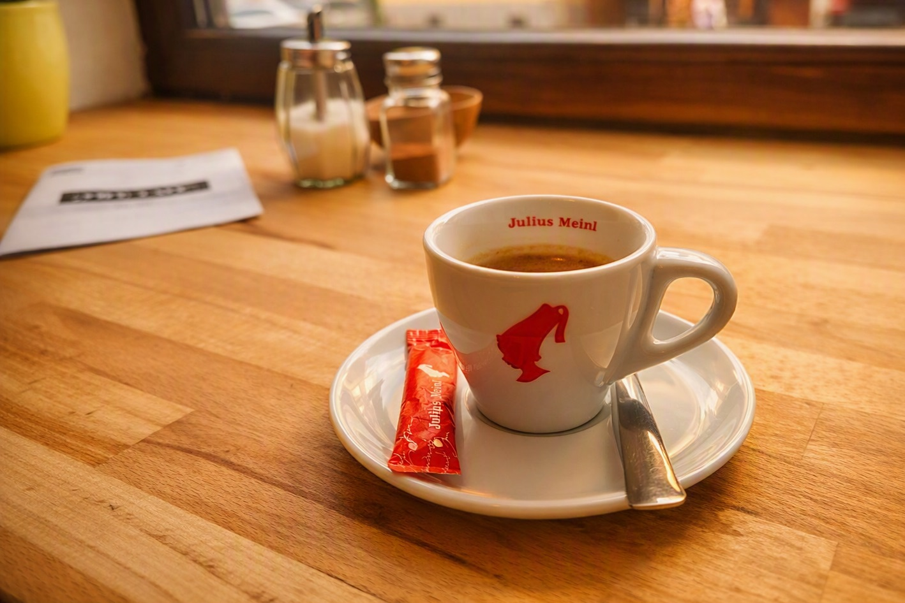
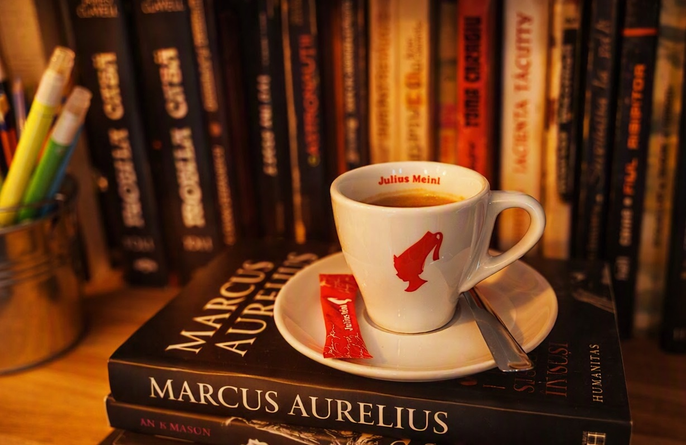
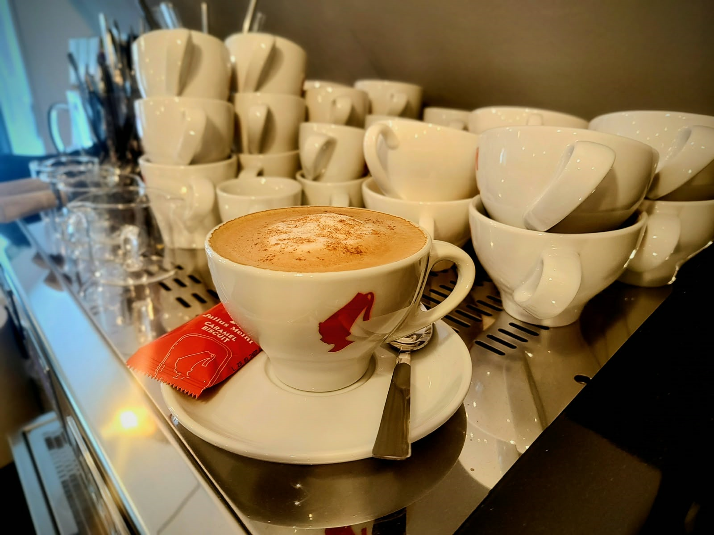

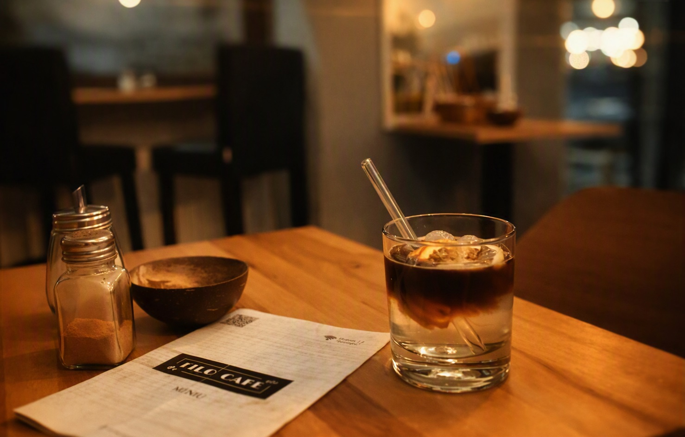
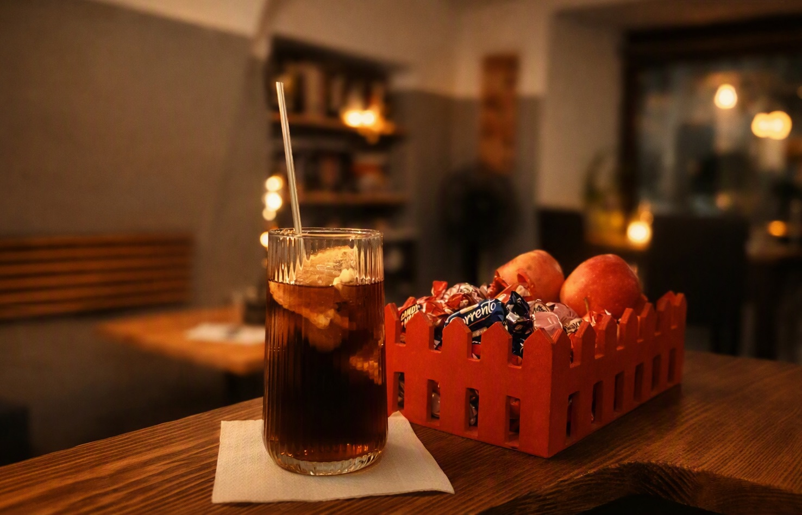
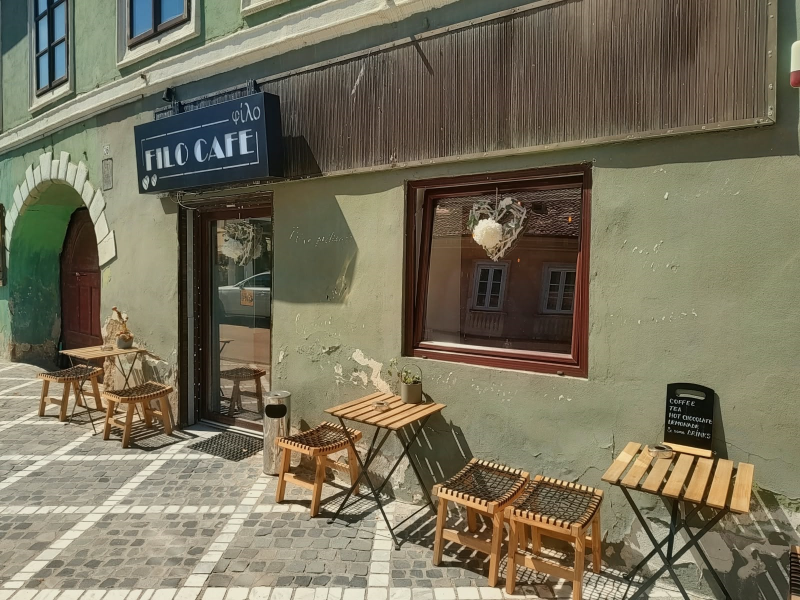

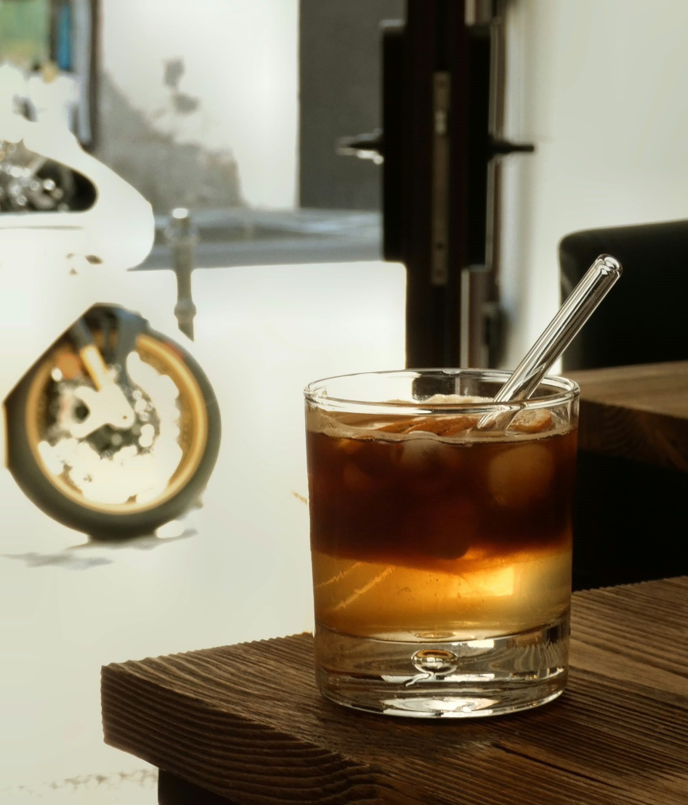
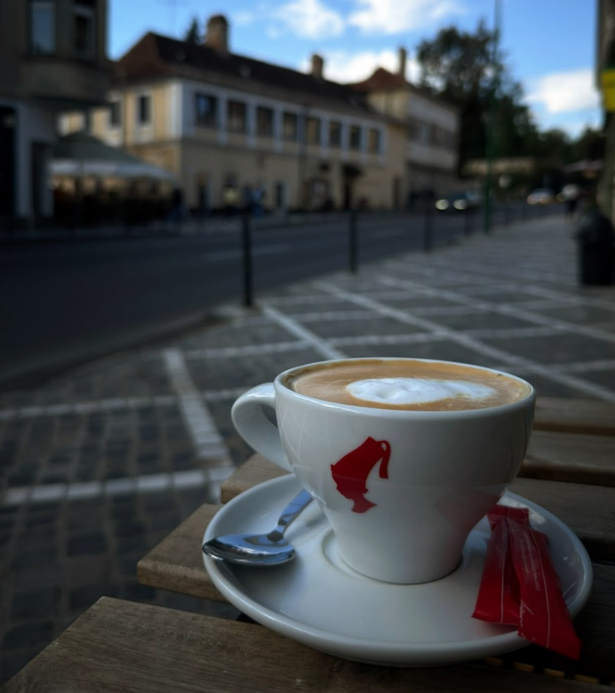
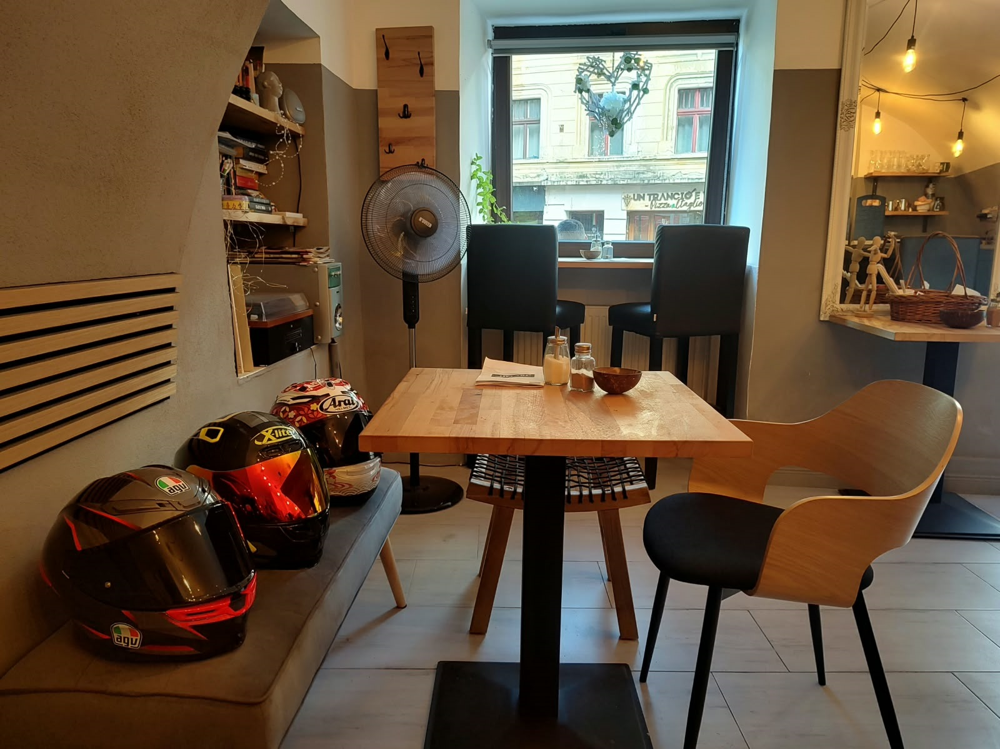

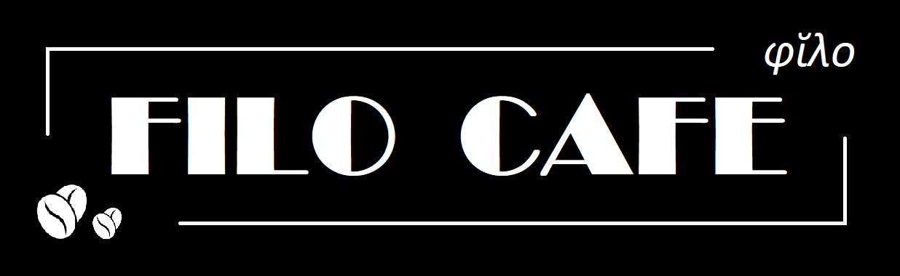
De ce Filo Cafe?
Prefixul filo, originar din greaca veche (φίλο), înseamnă prieten, iubitor de, amator de, care preferă și este folosit la compunerea de adjective sau substantive. Cuvinte precum filosof (iubitor de înțelepciune) sau filocalia (iubire de frumusețe) sunt mai vechi, și sunt intrate în vocabularul român din limba greacă. Filolog, filantrop, filoenglez, filotehnic și alte cuvinte astfel compuse au intrat ca neologisme în limba română pe parcursul secolului XIX, cele mai multe pe filiera franceză. Filo este folosit și ca sufix în formarea cuvintelor (francofil, cinefil, bibliofil, hidrofil).
În ceea ce ne privește, pentru că nu există alăturarea între filo și cafea, deși iubitori de cafea sunt din belșug, ne-am gândit că FILO CAFE ar fi potrivit, atât pentru că ne place cafeaua dar și pentru că avem o oarecare înclinație spre filologie. Așteptăm deci toți filo... amatorii de ceva să întregească atmosfera, cafeneaua fiind un mediu propice pentru discuții, povești, bârfe, pentru vorbe în general.
Și de ce să nu începem șirul de vorbe cu Filo?









Adresa: Str. Gheorghe Barițiu nr. 26, Brașov (BV)
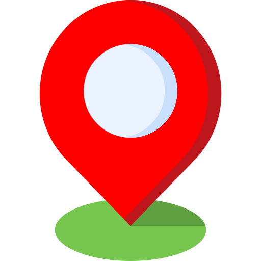
Program: Luni–Joi: 08:00–21:00
Vineri–Duminică: 08:00–22:00
Telefon: 0734 650 928
Email: filo.cafe.brasov@gmail.com